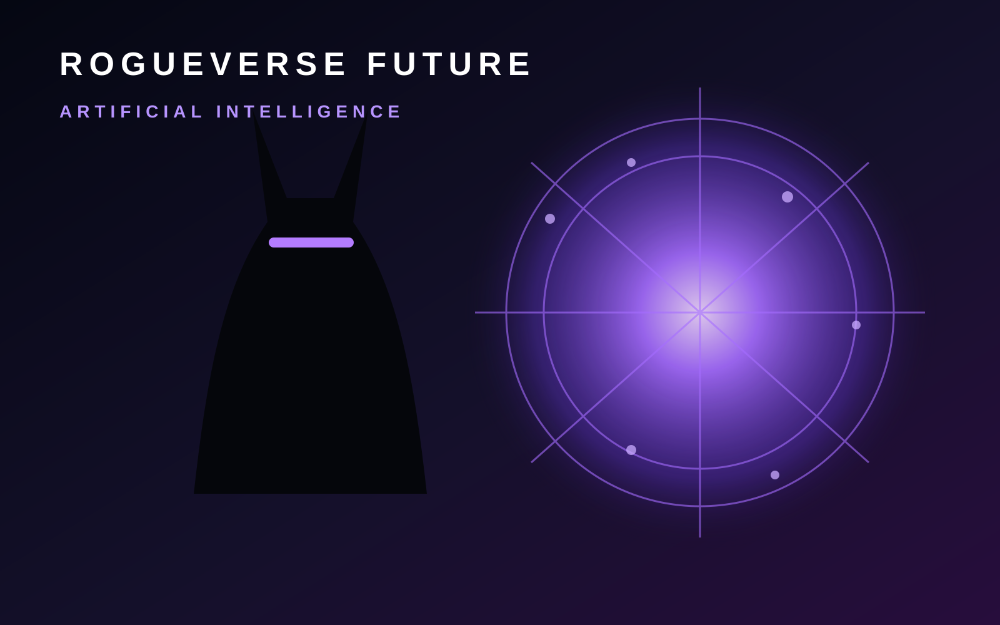

ROGUEVERSE FUTURE · ARTIFICIAL INTELLIGENCE
Artificial Intelligence Is Becoming Infrastructure
The important question is no longer whether AI can generate an answer. It is what happens when models, agents and automation become a layer underneath everyday creative and technical work.

Artificial intelligence covers a much wider territory than chatbots. It includes systems that classify information, recognize patterns, generate media, recommend actions, automate repetitive work and increasingly coordinate multiple tools on a person’s behalf.
That shift changes the role of software. Traditional software waits for a user to choose a command. AI systems can interpret a goal, assemble context and decide what action should happen next. The useful part is obvious. The difficult part is deciding when that judgment should be trusted.
From tool to collaborator
For creators, AI can accelerate research, organization, transcription, rough ideation, editing and production planning. For businesses, it can help route information and reduce repetitive administrative work. But speed does not remove responsibility. A faster mistake is still a mistake, and automated decisions can hide uncertainty behind a confident interface.
RogueVerse Future will follow AI through four questions: what the system can actually do, who controls the data and infrastructure behind it, what work it changes, and what responsibilities remain with the human using it.
The agent era
The next major transition is toward agents: software that can plan a sequence of actions instead of producing one isolated response. An agent might search files, compare information, update a project, prepare a draft and hand the result back for approval. That is powerful because it moves AI from conversation into workflow.
It also raises the stakes. The more authority software receives, the more important permissions, logging, verification and human review become. Intelligence without boundaries is not a productivity feature. It is an operational risk.
What RogueVerse is watching
We are interested in practical AI rather than spectacle: creative tools that actually save time, local models that improve privacy, agents that can be audited, hardware that makes advanced systems more accessible, and policy choices that determine who benefits from the technology.
The future of AI will not be defined by one model winning a benchmark. It will be defined by whether these systems become dependable enough to disappear into the background while people remain able to understand, challenge and control what they do.
RogueVerse Future Primer · This page defines the Artificial Intelligence coverage lane and will link to reporting, analysis and deeper features as they are published.